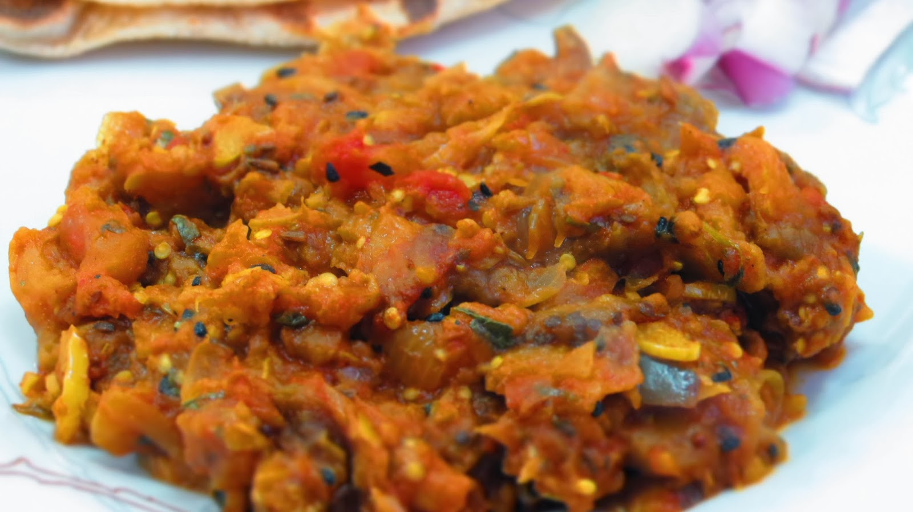

Ingredients:
1)1 medium Baigan (eggplant)
2)1/2 cup Cooked green peas
3)1 Finely chopped onions
4)1 Finely chopped tomatoes
5)1 Finely chopped green chilli
6)1/2 tsp Red chilli powder
7)1/2 tsp Garam Masala Powder
8)1/4 tsp Turmeric Powder
9)3 tbsp Vegetable oil
10)Salt to taste
11)Chopped green coriander leaves for garnishing
Preparation of baigan ka bharta :
1.Brush baigan (eggplant) with oil and roast it on a gas burner over medium heat.
2.Frequently turn the eggplant upside down, until fully roasted.
3.Once done, hold it under cold running water or in a bowl full of water. Cool it and peel off the blackened skin.
4.Mash the flesh.
5.Heat oil in a pan / kadhai . Add green chilli and onion and fry over medium heat until light golden brown.
6.Add red chilli powder, turmeric powder, garam masala and salt and stir. Add tomatoes and cook until tender.
7.Add green peas and mashed baigan (eggplant). Stir well. Fry the baigan bhartha for 5-7 minutes over medium heat.
8.Garnish the baigan bharta with green coriander leaves and serve hot.